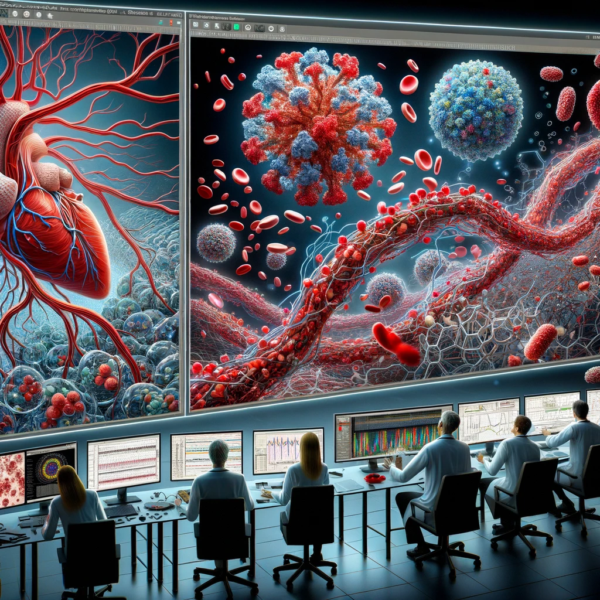

Veille Technologique
Simulation Computationnelle des Liquides et des Fluides en Biologie
Un Aperçu de l'Évolution Technologique, des Applications et des Avancées
Introduction :
La simulation computationnelle des liquides et des fluides représente un domaine crucial en biologie, permettant de modéliser des
phénomènes complexes tels que les flux sanguins, les interactions moléculaires et la dynamique des fluides cellulaires.
Cet article propose une veille technologique approfondie sur les avancées récentes, les applications pratiques et les
défis futurs dans ce domaine.
Fondements Technologiques et Innovations
Méthodes de Simulation
Des modèles tels que la dynamique des fluides computationnelle (CFD) et la simulation moléculaire sont largement utilisés.
Des progrès significatifs ont été réalisés dans l'amélioration de la précision et la réduction du temps de calcul.
Avancées dans les Algorithmes
L'intégration de l'intelligence artificielle et de l'apprentissage automatique a permis d'améliorer
la prédiction des comportements fluidiques dans des contextes biologiques complexes.
Applications en Biologie
Modélisation du Flux Sanguin
Essentielle pour comprendre les maladies cardiovasculaires, la simulation permet de prédire les effets de différents
traitements et interventions chirurgicales.
Étude des Protéines et Interactions Moléculaires
La simulation des liquides offre des insights précieux dans la compréhension des mécanismes moléculaires et peut contribuer au
développement de nouveaux médicaments.
Défis et Perspectives
Complexité des Systèmes Biologiques
La modélisation précise de systèmes biologiques complexes reste
un défi majeur, nécessitant des données de haute qualité et des modèles computationnels avancés.
Intégration Interdisciplinaire

La collaboration entre biologistes, chimistes, et informaticiens est
essentielle pour tirer pleinement parti des technologies de simulation.
Études de Cas et Résultats Marquants
Des exemples spécifiques d'études réussies utilisant la simulation computationnelle pour résoudre
des problèmes biologiques concrets seront présentés, soulignant l'impact et l'efficacité de cette
technologie.
Perspectives d'Avenir
Technologies Émergentes
L'évolution continue des capacités de calcul et des algorithmes promet de
rendre les simulations encore plus précises et accessibles.
Applications Potentielles
La simulation computationnelle est prête à jouer un rôle clé dans des
domaines tels que la médecine personnalisée et la biologie synthétique.
Conclusion
La simulation computationnelle des liquides et des fluides en biologie représente un champ d'étude en
pleine expansion, offrant des perspectives prometteuses pour la recherche et la pratique médicale.
Son évolution continue nécessite une veille technologique régulière pour rester à la pointe de l'innovation.
Sources
"Dynamique des Fluides Computationnelle en Biologie" - Journal of Computational Biology
"Simulation Moléculaire et ses Applications en Biologie" - Nature Reviews Molecular Cell Biology
"Intégration de l'IA dans la Simulation des Fluides Biologiques" - IEEE Transactions on Medical Imaging
"Études de Cas en Simulation Computationnelle en Biologie" - Bioinformatics
"Avenir des Technologies de Simulation en Biologie" - Trends in Biotechnology